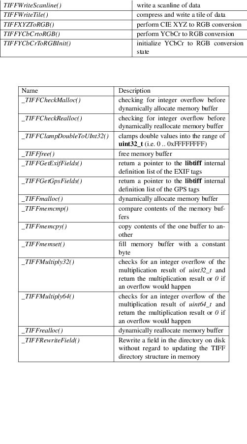
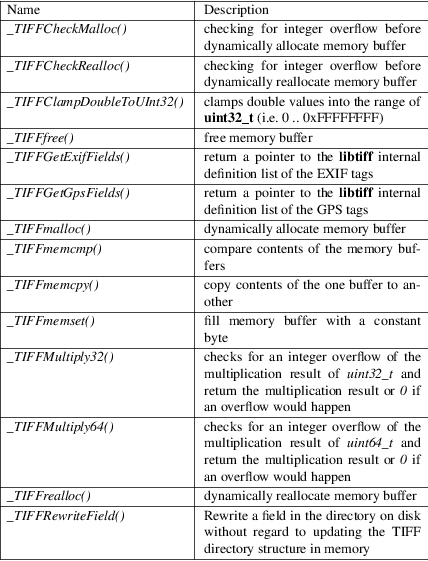
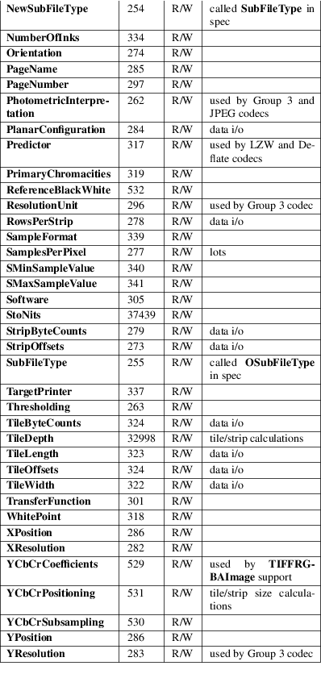
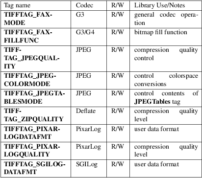

libtiff − introduction to libtiff, a library for reading and writing TIFF files
#include <tiffio.h> cc file.c −ltiff
libtiff is a library for reading and writing data files encoded with the âTag Image Fileâ format, Revision 6.0 (or revision 5.0 or revision 4.0). This file format is suitable for archiving multi−color and monochromatic image data.
The library supports several compression algorithms, as indicated by the Compression field, including: no compression (1), CCITT 1D Huffman compression (2), CCITT Group 3 Facsimile compression (3), CCITT Group 4 Facsimile compression (4), Lempel−Ziv & Welch compression (5), baseline JPEG compression (7), word−aligned 1D Huffman compression (32771), PackBits compression (32773). In addition, several nonstandard compression algorithms are supported: the 4−bit compression algorithm used by the ThunderScan program (32809) (decompression only), NeXTâs 2−bit compression algorithm (32766) (decompression only), an experimental LZ−style algorithm known as Deflate (32946), and an experimental CIE LogLuv compression scheme designed for images with high dynamic range (32845 for LogL and 32845 for LogLuv). Directory information may be in either little− or big−endian byte order; byte swapping is automatically done by the library. Data bit ordering may be either Most Significant Bit (MSB) to Least Significant Bit (LSB) or LSB to MSB. Finally, the library does not support files in which the BitsPerSample , Compression , MinSampleValue , or MaxSampleValue fields are defined differently on a per−sample basis (in Rev. 6.0 the Compression tag is not defined on a per−sample basis, so this is immaterial).
The library makes extensive use of C typedefs to promote portability. Two sets of typedefs are used, one for communication with clients of the library and one for internal data structures and parsing of the TIFF format. The following typedefs are exposed to users either through function definitions or through parameters passed through the varargs interfaces.
typedef uint32_t ttag_t; // directory tag typedef uint32_t tdir_t; // directory index typedef uint16_t tsample_t; // sample number typedef uint32_t tstrip_t; // strip number typedef uint32_t ttile_t; // tile number typedef int64_t tmsize_t; // signed size type (int32_t on 32−bit platforms) typedef tmsize_t tsize_t; // i/o size in bytes typedef void* tdata_t; // image data ref typedef void* thandle_t; // client data handle typedef uint64_t toff_t; // file offset
Note that tstrip_t, ttile_t, and tsize_t are constrained to be no more than 32−bit quantities by 32−bit fields they are stored in in the TIFF image. Likewise tsample_t is limited by the 16−bit field used to store the SamplesPerPixel tag.
tdir_t constrains the maximum number of IFDs that may appear in an image and may be an arbitrary size (w/o penalty). Starting with libtiff 4.5.0, tdir_t is a 32−bit unsigned integer. Previously, it was a 16−bit unsigned integer.
ttag_t must be either int, unsigned int, pointer, or double because the library uses a varargs interface and C restricts the type of the parameter before an ellipsis to be a promoted type. toff_t is defined as uint64_t because TIFF file offsets are (unsigned) 32−bit quantities, and BigTIFF file offsets are unsigned 64−bit quantities. A signed value is used because some interfaces return −1 on error. Finally, note that user−specified data references are passed as opaque handles and only cast at the lowest layers where their type is presumed.
The following routines are part of the library. Consult specific manual pages for details on their operation; on most systems doing man function−name will work.


The table below lists the TIFF tags that are recognized and handled by the library. If no use is indicated in the table, then the library reads and writes the tag, but does not use it internally. Note that some tags are meaningful only when a particular compression scheme is being used; e.g. Group3Options is only useful if Compression is set to CCITT Group 3 encoding. Tags of this sort are considered codec−specific tags and the library does not recognize them except when the Compression tag has been previously set to the relevant compression scheme.

In addition to the normal TIFF tags the library supports a collection of tags whose values lie in a range outside the valid range of TIFF tags. These tags are termed pseudo−tags and are used to control various codec−specific functions within the library. The table below summarizes the defined pseudo−tags.

TIFFTAG_FAXMODE:
Control the operation of the Group 3 codec. Possible values (independent bits that can be combined by orâing them together) are:
FAXMODE_CLASSIC:
(enable old−style format in which the RTC is written at the end of the last strip),
FAXMODE_NORTC:
(opposite of FAXMODE_CLASSIC; also called FAXMODE_CLASSF),
FAXMODE_NOEOL:
(do not write EOL codes at the start of each row of data),
FAXMODE_BYTEALIGN:
(align each encoded row to an 8−bit boundary),
FAXMODE_WORDALIGN:
(align each encoded row to an 16−bit boundary),
The default value is dependent on the compression scheme; this pseudo−tag is used by the various G3 and G4 codecs to share code.
TIFFTAG_FAXFILLFUNC:
Control the function used to convert arrays of black and white runs to packed bit arrays. This hook can be used to image decoded scanlines in multi−bit depth rasters (e.g. for display in colormap mode) or for other purposes. The default value is a pointer to a builtin function that images packed bilevel data.
TIFFTAG_IPTCNEWSPHOTO:
Tag contains image metadata per the IPTC newsphoto spec: Headline, captioning, credit, etc⦠Used by most wire services.
TIFFTAG_PHOTOSHOP:
Tag contains Photoshop captioning information and metadata. Photoshop uses in parallel and redundantly alongside IPTCNEWSPHOTO information.
TIFFTAG_JPEGQUALITY:
Control the compression quality level used in the baseline algorithm. Note that quality levels are in the range 0−100 with a default value of 75.
TIFFTAG_JPEGCOLORMODE:
Control whether or not conversion is done between RGB and YCbCr colorspaces. Possible values are:
JPEGCOLORMODE_RAW:
(do not convert), and
JPEGCOLORMODE_RGB:
(convert to/from RGB)
The default value is JPEGCOLORMODE_RAW.
TIFFTAG_JPEGTABLESMODE:
Control the information written in the JPEGTables tag. Possible values (independent bits that can be combined by orâing them together) are:
JPEGTABLESMODE_QUANT:
(include quantization tables), and
JPEGTABLESMODE_HUFF:
(include Huffman encoding tables).
The default value is JPEGTABLESMODE_QUANT | JPEGTABLESMODE_HUFF.
TIFFTAG_ZIPQUALITY:
Control the compression technique used by the Deflate codec. Quality levels are in the range 1−9 with larger numbers yielding better compression at the cost of more computation. The default quality level is 6 which yields a good time−space tradeoff.
TIFFTAG_PIXARLOGDATAFMT:
Control the format of user data passed in to the PixarLog codec when encoding and passed out from when decoding. Possible values are:
PIXARLOGDATAFMT_8BIT:
for 8−bit unsigned pixels,
PIXARLOGDATAFMT_8BITABGR:
for 8−bit unsigned ABGR−ordered pixels,
PIXARLOGDATAFMT_11BITLOG:
for 11−bit log−encoded raw data,
PIXARLOGDATAFMT_12BITPICIO:
for 12−bit PICIO−compatible data,
PIXARLOGDATAFMT_16BIT:
for 16−bit signed samples, and
PIXARLOGDATAFMT_FLOAT:
for 32−bit IEEE floating point samples.
TIFFTAG_PIXARLOGQUALITY:
Control the compression technique used by the PixarLog codec. This value is treated identically to TIFFTAG_ZIPQUALITY; see the above description.
TIFFTAG_SGILOGDATAFMT:
Control the format of client data passed in to the SGILog codec when encoding and passed out from when decoding. Possible values are:
SGILOGDATAFMT_FLTXYZ:
for converting between LogLuv and 32−bit IEEE floating valued XYZ pixels,
SGILOGDATAFMT_16BITLUV:
for 16−bit encoded Luv pixels,
SGILOGDATAFMT_32BITRAW: SGILOGDATAFMT_24BITRAW:
for no conversion of data,
SGILOGDATAFMT_8BITRGB:
for returning 8−bit RGB data (valid only when decoding LogLuv−encoded data),
SGILOGDATAFMT_FLTY:
for converting between LogL and 32−bit IEEE floating valued Y pixels,
SGILOGDATAFMT_16BITL:
for 16−bit encoded L pixels, and
SGILOGDATAFMT_8BITGRY:
for returning 8−bit greyscale data (valid only when decoding LogL−encoded data).
All error messages are directed through the TIFFErrorExtR() routine. By default messages are directed to stderr in the form: module: message\n. Warning messages are likewise directed through the TIFFWarningExtR() routine.
fax2tiff, pal2rgb, ppm2tiff, rgb2ycbcr, raw2tiff, tiff2bw, tiffdither, tiffdump, tiffcp, tiff2cmp, tiffgt, tiffinfo, tiffmedian, tiffsplit,
âTag Image File Format Specification *Revision 6.0*â, an Aldus Technical Memorandum.
âThe Spirit of TIFF Class Fâ , an appendix to the TIFF 5.0 specification prepared by Cygnet Technologies.
|
• |
The library does not support multi−sample images where some samples have different bits/sample. | ||
|
• |
The library does not support random access to compressed data that is organized with more than one row per tile or strip. |
LibTIFF contributors
1988-2022, LibTIFF contributors